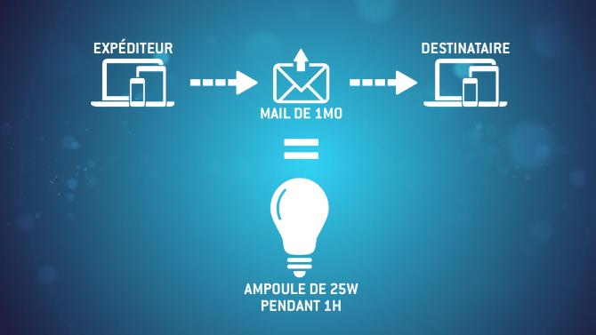
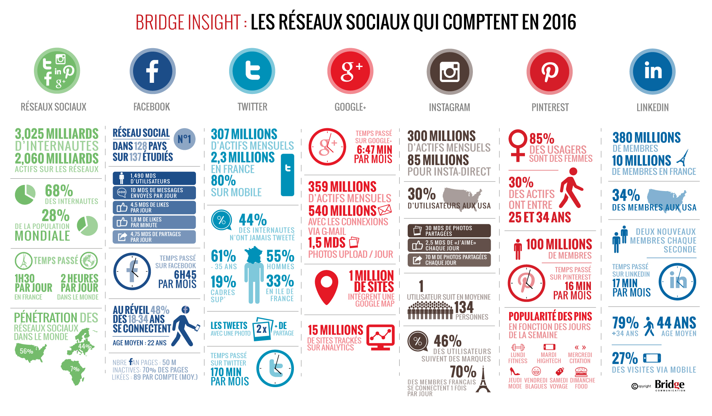

Via notre boite mail et nos recherches
Il y a heureusement plusieurs solutions à ce phénomène qui nous touche tous à l’heure actuelle. On ne pourra jamais tout arrêté mais on peut réduire notre consommation pour faire en sorte d’avoir une meilleure éthique pour notre planète :
*Tout d’abord il faut penser à bien vider sa boîte mail ! De nombreuses personnes entassent des mails qui ne sont plus utiles mais ils polluent tout autant et d’ailleurs, 90% des utilisateurs gardent des mails sans jamais les supprimer. Pour donner quelques chiffres : Un utilisateur moyen reçoit 40 mails par jour et une pièce-jointe émet environ 19 g de CO2. Sachant qu’un stockage d’un mail dans un data center pendant un an émet 10 grammes de Co2. En bref, nous avons tous la possibilité de filtrer et de vider notre boite mail.
Ensuite il y a la consommation de vidéos sur téléphone. Youtube étant le second réseau le plus utilisé sur internet dont le but étant de regarder des vidéos ou même d’envoyer des vidéos : plusieurs milliards de vues par jour en 2020 et 2 milliards d’utilisateurs utilisent cette plateforme ; En bref, ce réseau est très utilisé mais également très polluant selon comment on l’utilise.. Veux t-on vraiment regarder cette vidéo ? Est-ce vraiment nécessaire de mettre en HD ou en 4K ? Si c’est de la musique n’est-il pas mieux de télécharger légalement les musiques concernés ? Il faut réfléchir à la nécessité de notre action avant de consommer sur internet.
Par ailleurs, il y a énormément d’utilisateurs qui laissent leur 4G allumer en permanence même en étant chez eux au lieu d’utiliser le Wi-Fi . La bande passante 4G consomme 23 fois plus que le Wi-Fi et n’est pas forcément utile selon la demande.
Et dans nos communications
De nombreuses personnes laissent une conversation skype/ discord tourner en fond quand ils partent manger ou quand ils doivent s’absenter cinq min. Il serait préférable de couper cet appel et de le reprendre plus tard.
FaceTime, whatsapp, skype, discord, Snapchat, Messenger… Tous ces réseaux sociaux qui nous accompagnent au quotidien pour discuter avec nos proches, famille lointaine… MAIS qui promouvoit les conversations vidéos, et audio pour plus de facilité polluent également aussi.. Est-il nécessaire d’envoyer un audio ? De demander à Siri d’écrire à notre place ou de faire une conversation vidéo ?
Il faut toujours penser à ses actions lorsque l’on est sur internet afin de polluer notre monde le moins possible et nous en avons tous la possibilité et responsabilité !
Voici une interview réalisé afin de questionner des personnes au sujet de leur empreinte numérique.